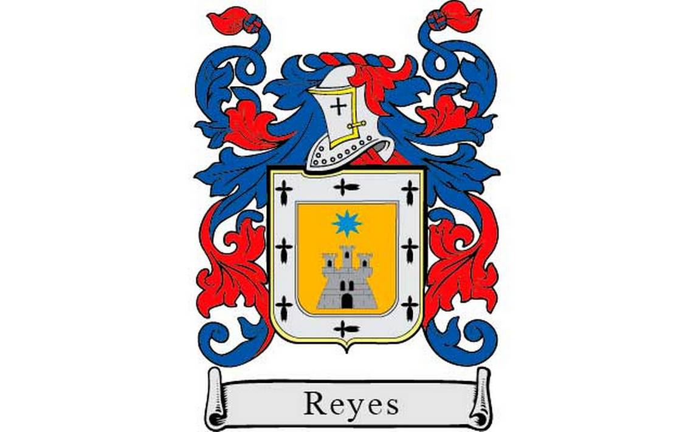

Mi nombre es Elmer Giovani Reyes Garrido,naci el 16 de abril del año 2006,en el Hospital San Juan de Dios,soy el mas pequeño de mis hermanos pero mas grande de estatura.
¿COMO SOY?
Considero ser timido y reservado sin embargo cuando me relaciono con las personas,tomo una actitud direferente y socializo con las mismas.
¿COMO SOY FISICAMENTE?
Estatura:1.70 metros
Color de ojos: cafe obscuro
Color de tez: Moreno claro
Contextura: Mesomorfo
Color de cabello natural:Castaño Oscuro
Forma de Ojos: Almendrados
Tipo de Rostro: Ovalado
¿COMO SOY EMOCIONALMENTE
No me siento tan orgulloso de lo que soy porque en ciertos aspectos soy fuerte pero en otros soy muy debil,mi personalidad cambia y me muestro cariñoso con las personas que se lo merecen.
SIGNIFICADO DE MI PRIMER NOMBRE "ELMER"
Derivado del apellido del inglés antiguo æðel que significa "noble" y mærque significa "famoso".
SIGNIFICADO DE MI SEGUNDO NOMBRE "GIOVANI"
Variante italiana de John. Del nombre hebreo Yochanan, que significa "Dios es misericordioso".
>SIGNIFICADO DE MI PRIMER APELLIDO "REYES"
Su significado tiene que ver con el de la palabra Rey que proviene del latín Rex y Regis que indica 'capacidad de gobernar' por lo tanto aquellos que lo llevan cuentan con el significado de 'aquél que sabe mandar'.
ESCUDO DE MI PRIMER APELLIDO

SIGNIFICADO DE MI SEGUNDO APELLIDO "GARRIDO"
Garrido es un apellido español que significa "guapo", "hermoso" o "elegante" .